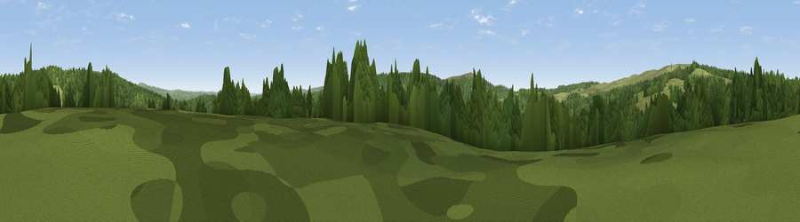

Viewpoint c11811_7188
#36209 in England · top 79% of its area beats it · —The view, rendered

A 360° render of this exact spot computed from the terrain model, tree cover and land cover — summer colours, afternoon light, calibrated against photographs of famous viewpoints. Real trees, hedges and buildings will differ in detail.
The panorama
Grey silhouette: terrain skyline in each direction (720 bearings, Earth curvature and refraction included). Dashed green: skyline with trees (+15 m) and buildings (+8 m) as obstacles. Blue strip: how far the ground is visible on each bearing.
Where the view opens
Wedge length = distance to the farthest visible ground on that bearing (vegetation-aware). Rings at 10, 25 and 50 km.
What fills the view
66% woodland · 34% grassland
Angular shares of the visible panorama (visual magnitude), not map area. Landscape diversity 0.28 (0–1 Shannon).
Key numbers
More beautiful places nearby
The staircase of upgrades: each row has a higher view potential than everything closer. Driving times are estimates from straight-line distance, calibrated against real road routing — check an actual route before setting out.
| Place | Direction | Drive | Score |
|---|---|---|---|
| Viewpoint c11834_7163 | NW · 2 km | ~5 min | 56.2 |
| Purdom Pikes | NE · 2 km | ~5 min | 65.5 |
| Viewpoint c11842_7151 | NW · 3 km | ~6 min | 71.2 |
| Glendhu Hill | SSW · 5 km | ~11 min | 74.9 |
| Deadwater Fell | NNE · 7 km | ~15 min | 79.4 |
| Viewpoint c11644_7156 | S · 8 km | ~17 min | 80.8 |
| Viewpoint c11995_7247 | NNE · 10 km | ~19 min | 82.1 |
| Viewpoint c12273_7856 | NE · 40 km | ~60 min | 83.7 |
55.20775, -2.63912 · source: screening · position refined by local search. Computed location — check access rights before visiting.